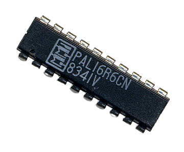
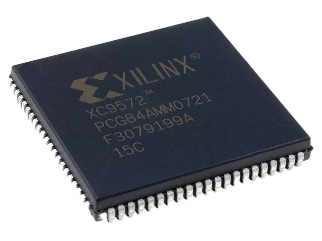
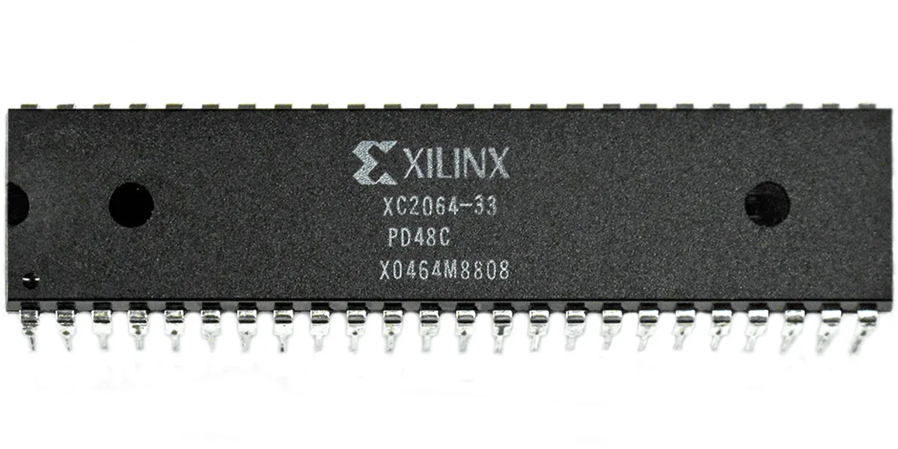
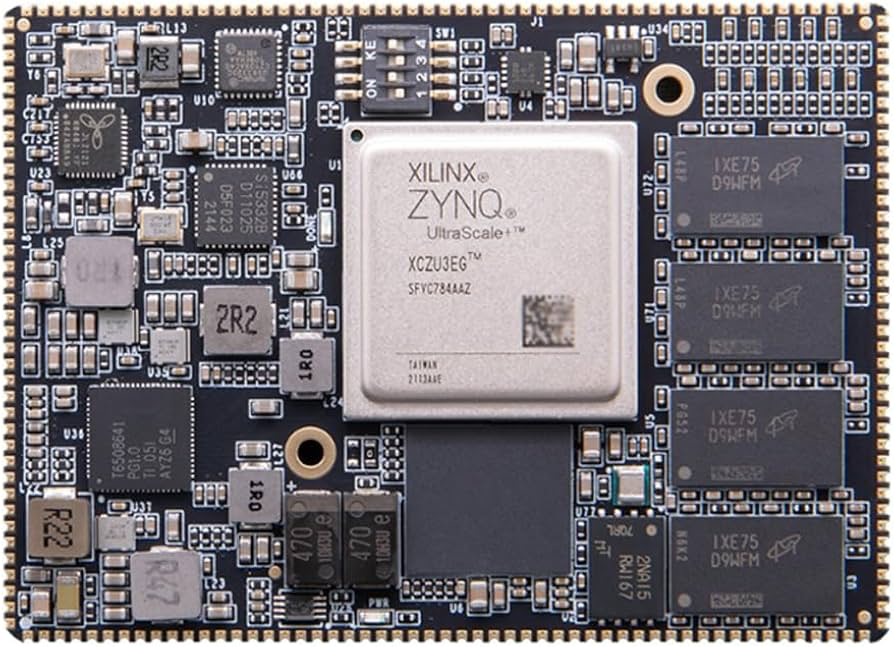

Evolutionary History
The journey toward modern programmable silicon spans over five decades of engineering breakthroughs. Before the arrival of Field-Programmable Gate Arrays, digital engineers were limited to either wiring thousands of individual logic gates by hand on breadboards or spending immense sums to fabricate permanent ASIC chips.
The evolution of this hardware paradigm shifted digital logic away from physically static electronics into flexible, fluid desktop-reconfigurable computer architectures.
[ TIMELINE ]
┌──────────────────────────────────────────────┐
│ 1985: SRAM FPGA (Xilinx) │
│ - Infinite configurations, volatile matrix │
├──────────────────────────────────────────────┤
│ 1980s: EEPROM CPLD │
│ - Reprogrammable, predictable timing │
├──────────────────────────────────────────────┤
│ 1970s: PROM / PAL / PLA │
│ - One-time programmable, fusible links │
└──────────────────────────────────────────────┘
1. The Early Foundations (1970s)
The earliest ancestors of programmable hardware were Programmable Logic Arrays (PLAs) and Programmable Array Logic (PALs). These early components consisted of an uncommitted grid of simple AND/OR digital gates built with tiny internal fuses.

[ PAL ONE-TIME PROGRAMMABLE FUSE CORE ]
Input A ───┬───────────────[ X ]───────────────┐
│ ▼
Input B ───┼───────────────[ ]─────────────────┤ AND Gate ──► Product Term
│ ▲
Input C ───┴───────────────[ X ]───────────────┘
Legend: [ X ] Intact Fuse (Connected) [ ] Blown Fuse (Disconnected)
An engineer would blow these fuses inside a specialised device programmer to route inputs to outputs. While revolutionary for the time, these chips were entirely non-reprogrammable; if one made a mistake in their logic design, the chip had to be thrown into the bin.
2. Complex Programmable Logic Devices (1980s)

As microchips grew denser, engineers combined multiple PAL structures onto a single piece of silicon, creating the Complex Programmable Logic Device (CPLD). These introduced electrically erasable memory components, meaning chips could finally be wiped and reprogrammed multiple times on the desktop.
[ CPLD MACROCELL ARCHITECTURE ]
┌───────────────┐ ┌─────────────────────────┐ ┌───────────────┐
│ Macrocell 1 │──────►│ │◄──────│ Macrocell 3 │
└───────────────┘ │ Central PIO │ └───────────────┘
│ (Programmable I/O / │
┌───────────────┐ │ Routing Matrix) │ ┌───────────────┐
│ Macrocell 2 │──────►│ │◄──────│ Macrocell 4 │
└───────────────┘ └─────────────────────────┘ └───────────────┘
│
▼
Global I/O Pins
CPLDs were characterised by a highly predictable timing model. Because every logic loop ran through a central routing matrix, calculating signal propagation delays was simple and exact.
3. The First True FPGA (1985)

In 1985, Xilinx co-founders Ross Freeman and Bernard Vonderschmitt commercialised the very first true Field-Programmable Gate Array: the XC2064. Instead of using massive fixed banks of standard AND/OR gates, this microchip introduced a sea of flexible Look-Up Tables (LUTs) bound together by thousands of dynamic routing wires controlled by volatile SRAM bits.
[ THE FPGA MATRICES ARCHITECTURE ]
Isolated CLB Block Distributed Wiring Matrix Tracks
┌─────────────────┐ ═════════════════════════════════
│ [LUT] ──► [FF] │◄───[Switch]─────────────────┐
└─────────────────┘ Box ▼
═════════════════════════
Dynamic SRAM Routing Paths
This was initially considered a highly radical bet. Many contemporary engineers believed dedicating precious silicon real estate to volatile memory cells purely to route wire paths was a waste of resources. However, Freeman’s insight won out: as silicon density scales exponentially, space becomes cheap, and flexibility becomes everything.
4. The System-on-Chip Era (Modern Era)

Modern FPGAs have expanded beyond mere programmable logic matrices. The modern era is defined by the System-on-Chip (SoC) FPGA, which houses hardwired physical microprocessor architectures (such as multi-core ARM application chips) alongside traditional flexible FPGA logic columns on a single physical die.
[ SYSTEM-ON-CHIP (SoC) INTERCONNECT DIE BISECTION ]
┌───────────────────────────────────┬───────────────────────────────────┐
│ HARD PROCESSOR CORES │ PROGRAMMABLE LOGIC FABRIC │
│ │ │
│ ┌───────────┐ ┌───────────┐ │ ┌───────────┐ ┌───────────┐ │
│ │ ARM Core │ │ ARM Core │ │ │ CLB │ │ CLB │ │
│ └───────────┘ └───────────┘ │ └───────────┘ └───────────┘ │
│ │ │ ▲ ▲ │
└──────────────────┼────────────────┴────────┼─────────────────┼────────┘
▼ │ │
AXI High-Speed System Bus ─────────┴─────────────────┘
This allows the processor to handle sequential OS tasks (like running Linux) while seamlessly offloading heavy mathematical operations directly to the parallel hardware blocks sitting millimetres away.